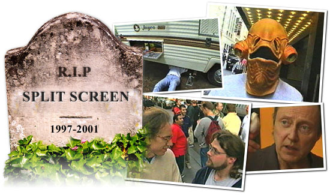

|
 |
|
Split Screen started with a bang on both The Independent Film Channel and Bravo in 1997. Whether it featured Christopher Walken cooking, Godzilla stomping, Jay, Silent Bob & Bob the Mailman dancing, or Matt Damon and Ed Norton gambling, our magazine format show covered the waterfront. Four years and 66 episodes later, it ended with a whisper. During the broadcast of the Fall, 2000 season, the one that kicked off with our virgin voyage to Fiji's 180 Meridian Cinema, we decided to end production of the series and so informed IFC. There was never any official announcement because I wasn't sure what to say. In part, our core collaborative group of enterprising producers began to run out of the fresh, new ideas that seemed to get viewers hooked on the show. At the same time, we sensed a growing indifference from IFC. It's not as if they begged us to continue. Since cable television recycles everything, we assumed they would showcase the Split Screen library for the remaining years of its licensed term - and nobody would notice we stopped. Sadly, IFC put the show in mothballs in April, 2001. This sudden, unexplained action made me a bit peevish. It didn't help that our regular Monday 8pm slot was turned over to a short-lived show from the nearly forgotten internet company ifilm. I forgot the manners my mother taught me. Instead of expressing deep gratitude for the lengthy run, I let out the dogs of sarcasm to attack the quality of tv executives and some of the early titles in the IFC Films line-up. Well I still regret losing Split Screen's great champions Jonathan Sehring and Caroline Kaplan to feature films. But our loss was the movie world's gain. I can still take a few jabs at the silly hoopla surrounding Girlfight (please don't hit me Michele Rodriguez). But either as producers or distributors, the IFC Films brain trust showed everyone the proof is in the pudding with the holy trinity of Monsoon Wedding, Y Tu Mama Tambien, and , the surprise of a lifetime, My Big Fat Greek Wedding. As a twenty year veteran of the feature film scene prior to the creation of Split Screen, I know that's where many in the tv industry really want to be. The only reason to migrate in the opposite direction is the seeming ubiquity and easy availability of the enormous tv audience. But even now, with Jon Favreau's Dinner For Five filling our slot, the vast majority of America can't get IFC. Bravo's ad-supported move into the cable mainstream made NBC decide it was worth $1.25 billion to own the channel showing its own West Wing repeats. We really wanted to try something very off-center and attract lots of viewers at the same time - a homemade cult hit. Split Screen was great fun while it lasted. What's the legacy? Our 100,000 regular viewers got a first look at the amazing raw material that eventually became The Blair Witch Project, American Movie, Waking Life, and the HBO/Cinemax documentary How's Your News? to name just a few. Where else on tv could you see cows go to a drive-in, goats eat an RV, a self-taught stuntman stage multi-car collisions in a gravel pit, a camera spiral down a sewer pipe, a draft resister shoot himself in the foot, or a private detective make art films out of surveillance footage? The years pass. People forget. Split Screen is nowhere to be seen on the airwaves, and we never quite managed to package a video & dvd deal. There seems to be a lot of interest in my main man Kevin Smith's frequent appearances. As for the rest, keep the faith. And in the meantime, read all about each and every segment we ever did in the Episode Guide.
{% include copyright.html %} {% include barmap.html %} {% include topmap.html %} |